1. HTML
一、HTML 基础
HTML 定义
HTML：超文本标记语言，和txt的不同在于使用标签从而使得文字中能加入图片、视频等，丰富文本
超文本：链接
标记：也就是标签，带尖括号的文本
标签一般成对出现，即开始结束标签
<>里面放英文字母（标签名）
结束标签比开始标签多/
单标签只有开始标签，例如换行，水平线等，包括内容的都是双标签
HTML文件的后缀名为.html或者.htm
HTML 基本骨架
<html>和</html>：整个网页都要包含在这两个标签之内
以下的双标签都省略掉结束标签（懒）
<head>：网页头部，用来存放给浏览器看的信息，如CSS
<title>：网页的标题
<body>：网页主体，用来存放给用户看的信息，如图片文字等
标签之间的关系
父子关系（嵌套关系）
一个标签包裹另一个标签，如html是所有标签的父标签
子级标签换行且缩进
兄弟关系（并列关系）
兄弟标签换行且对齐
如head和body标签
网页头部三大核心板块
title
description
Keywords
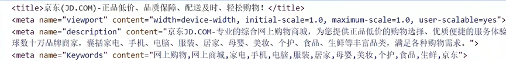
二、常见 HTML 标签
标题标签
定义了 h1~h6 六个标签，且均为双标签，字体大小从h1到h6逐渐减小
标题都是字体加粗的，且独占一行
h1在网页里只能用一次，一般只能放新闻标题或网页logo；h2~h6没有使用的限制
段落标签
一般用在新闻段落、文章段落等
标签名：<p>（双标签）
特点：独占一行，段落之间存在间隙，自动换行
换行标签
标签名<br>，单标签
可以多加几个br，增大行与行之间的空隙
网页中不能回车换行，只能用br或者像段落标签类似标签
水平线标签
在网页中画出一条水平的直线
标签名：<hr>
文本格式化标签
给文本添加特殊格式，如加粗、倾斜、下划线、删除线等
strong或b：加粗
em或i：倾斜
ins或u：下划线
del或s：删除线
一般使用右边的标签名
两个文本格式化标签在一行显示
图像标签
用于在网页中插入图像
<img src='图片的url'>，单标签
img标签最基本的就是src属性，制定了图片路径，除此之外还有：
alt：替换文本，即图片无法显示时显示的文字
title：提示文本，即鼠标悬停时显示的文字
width：图片的宽度
height：图片的高度
如果只写一个，浏览器默认等比缩放
标签名和属性之间用空格隔开，不区分前后顺序
超链接标签
标签名：<a href='跳转url'>文本</a>
其中href为必须属性，为跳转的的url，文本就是超链接的文字。若href值为#，表示空链接
其他属性为：
target：若值为：_blank，则会新建窗口并打开跳转页面
download：点击超链接自动下载文件
音频标签
标签名：<audio src='音频的URL'></audio>，双标签
其它属性：
controls：显示控制面板，可以不写属性值
在HTML5里面，如果属性值和属性名完全一样，可以简写一个单词，不用写属性值
loop：循环播放，不写属性值
autoplay：自动播放。为了提升用户体验，浏览器一般会禁用自动播放，不写属性值
视频标签
标签名：<video src=''></video>，双标签
其它属性名：
controls：一般都要写，展示控制面板
loop：是否循环播放
muted：静音播放，不写属性值
autoplay：浏览器支持在静音状态下自动播放
格式化标签和代码标签
<pre> </pre>：定义了预格式化的文本，其中的任何文本都将按HTML的源代码中的内容展示
<code> </code>：其中的内容将表现为块级元素，常用于展示代码，并被包含在 pre 标签中
列表、表格、表单标签
列表
作用：布局内容排列整齐的区域
分类：无序列表、有序列表、定义列表
无序列表
ul嵌套li，都是双标签
ul是无序列表整体，li是列表条目
一般ul里面只能放li，而li里面能包裹任何内容
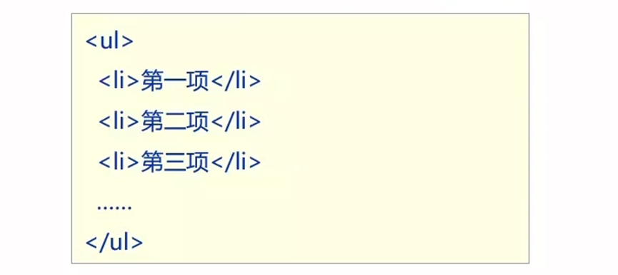
有序列表
ol是父级，li是子集，都是双标签
有序列表一般会显示列表项的序号
定义列表
dl嵌套dt和dd，dt定义列表的标题，dd定义列表的详情/描述
dd可以堆叠继续写，写完了一个列表，继续接dt
dt和dd可以包含任何内容
dd会自动换行且缩进，通过CSS可以控制缩进的样式
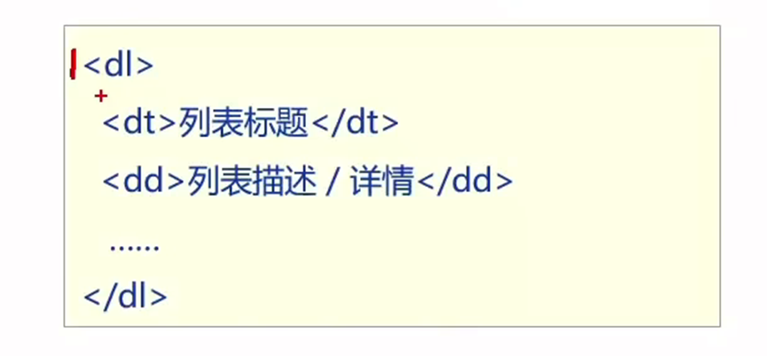
表格
table嵌套tr，tr嵌套td/th
table表示整个表格，tr表示一行，th为表头单元（自动加粗+居中）格，td为内容单元格。后三者可堆叠写，且这些标签的顺序决定了表格的样式
表格默认没有边框线，在table中使用border属性可以为表格添加边框线，如border='1'，表示一像素的边框
表格结构标签：让表格结构更清晰，一般不用加，不过也可以用来反爬。表格结构标签是给浏览器看的，爬虫里面不能包含这些标签，否则路径出错
thead：表格头部
tbody：表格主体
tfoot：表格底部
合并单元格
跨行合并：保留最上的单元格，添加rowspan属性
取值是数字，即表示需要合并的单元格的数量
这个span就是横跨的意思，间接实现了合并单元格
跨列合并：保留最左的单元格，添加属性colspan
添加span的属性后，删掉其它单元格即可
注意：在td标签里加属性，不能跨标签合并
表单
作用：收集用户信息，例如登录页面
标签：form标签，双标签，表示表单区域，所有表单元素都要在form，否则有些功能可能没效果。其action属性表示发送数据的地址
用户输入：<input type=''>，单标签，默认不换行
type 的属性值不同则功能不同，如：
=text：文本框，用于输入单行文本
=password：密码框
默认以点代替密码
=radio：单选框，需要加其它代码一起使用
可为input添加其他属性：
name：控件名称，name相同的input是一组，不是选项名，如下所示
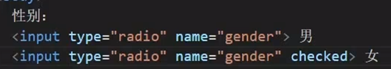
checked：默认选中
=checkbox：多选框，同样要加代码
checked属性，和radio一致，注意不用name分组
=file：上传文件
默认上传一个文件，给input添加multiple属性（名值相同），可上传多个
placeholder：input的提示信息，一般在文本和密码框中使用
下拉菜单：select嵌套option，select是下拉菜单整体，option是菜单的每一项
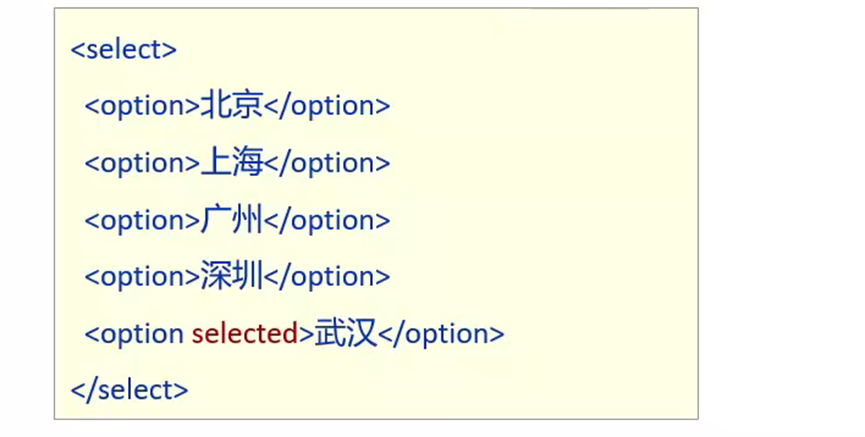
selected默认选中，option存在顺序
select和option还有其它属性，但一般是收集了信息后发送数据用的，暂时没用
文本域标签
换行文本输入，例如评论
<textarea>默认提示文字</textarea>，双标签
name、id是发送数据用的
cols、rows设置文本框大小，但一般不需要，因为用CSS比较多
默认的文本域，右下角可以拖拽，但一般会禁用，因为网页也有其它元素，不能随意更改元素大小
说明标签
label，双标签，是对标签的说明，也可以增大表单控件的选择范围
写法一：label只包含内容，不包含表单控件，label必须要for属性和表单控件的id值完全一致

直接使用label包括文字和表单控件，不需要属性
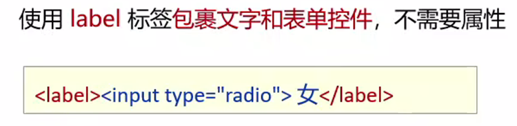
按钮标签
<button type=''>按钮提示文字</button>，双标签
type属性值：
submit：提交功能，把数据提交到后台（默认）
reset：重置按钮，点击后将表单控件恢复默认值
button：默认没有功能，一般和js一起使用
无语义的布局标签
布局网页，划分网页内容，摆放内容
div：独占一行，双标签，俗称大盒子，就算内容满了也不会换行，而p标签会自动换行
span：不换行，双标签，俗称小盒子
字符实体
空格：使用
<：使用 <
>：使用 >
如果想要在网页中展示<>等符号，需使用字符实体，否则会被网页解释为某个标签
在代码中敲键盘空格，网页只识别一个，仍需要使用字符实体
字符实体均为&开头，；结尾
注释
格式：，其中…为注释内容，且不会在浏览器中显示
在VSCode中，添加/删除注释快捷键为ctrl+/（所有语言通用）
三、HTML 网页开发常见问题
编写web的html文件，必须先保存ctrl+s，再在浏览器中打开，否则不会发生更改
VScode快捷生成网页基本骨架：输入英文!，再按下回车
VSCode按住alt+shift，再进行点击，可选择多行同时编辑
使用bootstrap时，在引入css后，默认是不会有类名等提示的，需要下载插件：IntelliSense for CSS class names in HTML
vscode不一定每次都能连上扩展商店，如果不行，可以开启VPN
调试工具：
把写的html文件用浏览器打开，使用“检查”，此时若哪一行有黄色感叹号，则表示这一行有问题
调试时，在样式板块，鼠标移动到选择器位置后，显示多选框，可以方便地展示或不显示各种css的效果，甚至可以直接在浏览器改css数值，非常直观
若css中某一行属性在浏览器里检查，发现这一行是被划掉的，就代表这行属性不生效
js标签放置位置：
理论上在html文件里任何位置都可以放置，但一般常放在两个位置：
head里面，优点是方便管理（和link css一致）
body末尾
更推荐放，因为无需担心因页面未完成加载，造成 DOM 节点获取不到，使脚本报错的问题，而且能避免因脚本运行缓慢造成页面卡死的问题
js的执行同样有顺序，顺序执行，后面的覆盖前面的
注意：当需要使用下拉菜单等功能时，需要引入 bootstrap.bundle.js 而不是bootstrap.js，前者还包含了popper.js。只使用后者，下拉菜单无效
当大盒子里装小盒子时，注意大盒子默认是有margin的，所以可能导致不能和左边界对齐，这时需要去除margin。当出现格式问题时，多使用浏览器的“检查”功能
转义问题：在网页源码中插入代码，如<<会被识别成标签符号，为了避免出错，需要使用<和>分别替代<和>
2. CSS 基础
一、CSS
层叠样式表（Cascading style sheets，CSS）是一种样式表语言，用来描述HTML文档的呈现，一般用来美化HTML网页
less
是一个CSS预处理器，less文件后缀是.less，扩充了CSS语言，使CSS具备一定的逻辑性、计算能力
注意：浏览器不识别less代码，需要先将less文件转换成CSS文件，再引入css
二、CSS 引入方式
内部样式表
CSS写在 style 里，容易学习，如下
在头部中的title标签下方添加style双标签，style标签里书写css代码，格式为：选择器{属性:属性值}
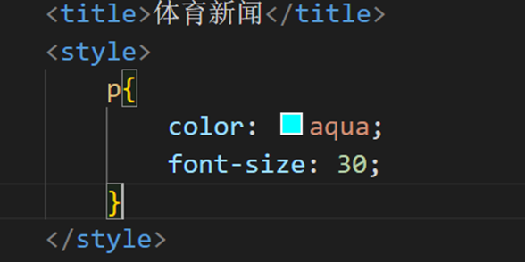
外部样式表
CSS单独写在CSS文件中（.css），在HTML里使用 link 标签引入，开发中最常使用
link 标签放在 head 里面，title 的下方，其 rel 默认就是 stylesheet，无需改，href 即 css 文件路径
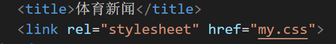
CSS 中的书写样式为：
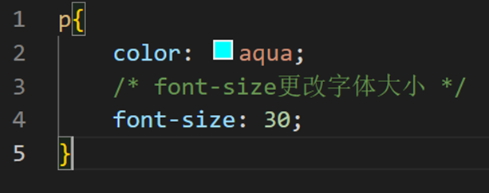
注意 font-size 属性必须有单位，例如px（像素），图中忘写了
行内样式
一般配合 JavaScript 使用，css直接写在标签的 style 属性里，引号里面是所有 style 的样式
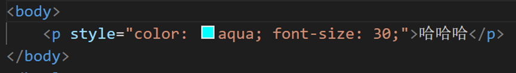
三、CSS 中的选择器
CSS使用选择器选择指定标签进行设计
标签选择器
使用标签名作为选择器，所有同名标签将设置成相同样式
类选择器
查找标签，差异化标签的显示效果
在标签里添加 class='类名'，选择器使用标签名.类名进行选择（也可以不加标签名）。style里称定义，实际标签使用时称使用
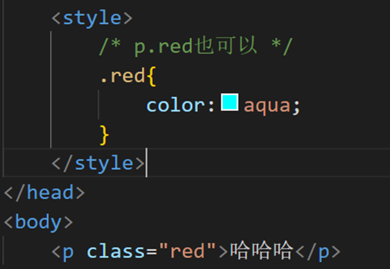
一个标签只能加一个标签class，但class里面可以有多个值，不同值之间空格隔开
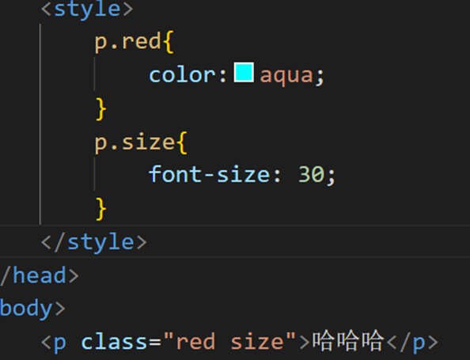
id 选择器
id 选择器一般配合 js 使用，很少用来设置 css 样式
同一个 id 名只能在一个页面中使用一次
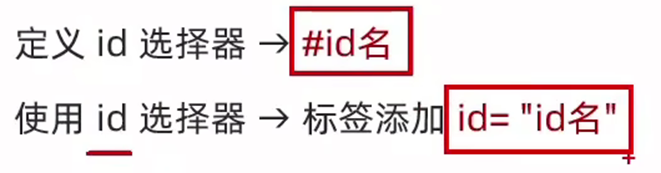
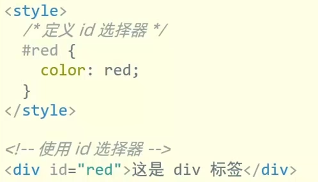
通配符选择器
查找页面所有标签，设置相同样式
使用方法：*{属性设置键值对}，不需要调用，将设置给所有标签，比如网页使用同一种字体、同一种颜色等
最重要的功能是清除标签默认属性，如清除p和h的换行间隔
复合选择器
定义：由两个或多个基础选择器，通过不同的方式组合而成
作用：更准确、更高效地选择目标标签
后代选择器
选择某元素的所有后代元素，可以穿透
写法：父选择器 子选择器{css属性}，父子之间空格隔开
子代选择器
只选择某元素儿子级别的元素
写法：父选择器>子选择器{css属性}，父子之间用>隔开
并集选择器
选择多组标签设置相同的样式
写法：选择器1,选择器2,选择器3,…{css属性}，用 , 隔开
交集选择器
选中同时满足多个条件的元素
写法：选择器1选择器2{css属性}，选择器之间没有符号
注意：类选择器本身是带.的，例如p.box就是连写
伪类选择器
伪类表示元素状态，选中元素的某个状态设置样式
例如鼠标悬停状态：选择器:hover{css属性}
超链接的四个伪类状态
:link：访问前
:visited：访问后
:hover：鼠标悬停
:active：点击时（激活）
注意，如果都要写，则必须按顺序
结构伪类选择器
根据元素的结构关系查找元素，例如
E:first-child：查找第一个E元素
E:last-child：查找最后一个E元素
E:nth-child(公式)：查找第公式指定的多个元素（从1开始）
公式：an+b，n从0开始，a可以为负
伪元素选择器
创建虚拟元素，用来摆放装饰性的内容（伪元素），默认是行内显示模式，可用display属性
E::before：在E里边最前面添加一个伪元素
E::after：在E里边最后面添加一个伪元素
必须设置 content:'' 属性，用来设置伪元素的内容
四、CSS 的使用
基础
css 可以设置每个选择器所在位置的背景，包含宽高和背景颜色
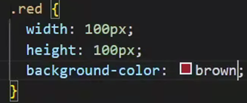
文字控制属性
用于美化文字。常见字体属性如下：
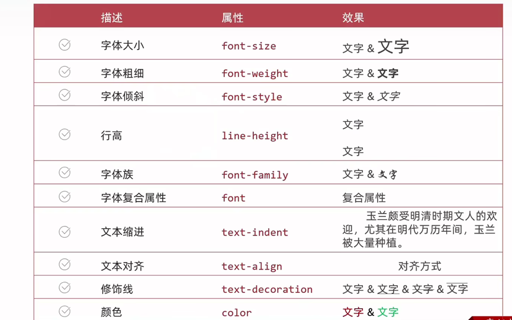
常用属性值：
font-size：以px为单位的数字（必须要单位）
font-weight：normal、bold（也可以用数字）
font-style：normal、italic（倾斜）
line-height：数字加px，比如30px
行高由三部分组成：上间距、文本高度、下间距
因此行高==box的高度，则可表示垂直居中，但只适用于单行文字
font-family：字体名，如楷体，可以有多个字体，各个字体用逗号隔开，浏览器从左到右查找
font：是复合属性，一般设置网页文字公共样式使用，可以设置多个属性，但必须按顺序写，空格隔开
text-indent：数字+px，但更常用数字+em，1em为当前标签字号大小
text-align：
left：左对齐
center：居中对齐
right：右对齐
text-align本质是给内容居中，也可以给图片使用
text-decoration：
none：去掉修饰（注意超链接默认是有下划线的）
underline：下划线
line-through：删除线
overline：上划线
color：
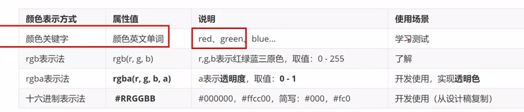
a表示透明度，a值越大，越不透明
CSS 特性
继承性：子级默认继承父级标签的文字控制属性
如果标签自己有样式，则不继承
层叠性：若对同一个标签进行更改（同选择器），则：
相同的属性会覆盖，只生效后面的属性
不同的属性会叠加，不同的属性都生效
优先级：也叫权重
当一个标签使用了多种选择器，优先级高的样式生效
一般是选择器选择的范围越大的，优先级越低，即通配符选择器<标签<类<id<行内样式<!important
当使用的是复合选择器，则需要权重叠加计算，同一级从左向右因此比较选个数，同一级个数多的优先级高
Emmet写法
代码的简写方式，输入缩写，vscode会自动生成对应的代码
例如：如果想要带类名的标签，可以直接输入：标签名.类名即可自动生成
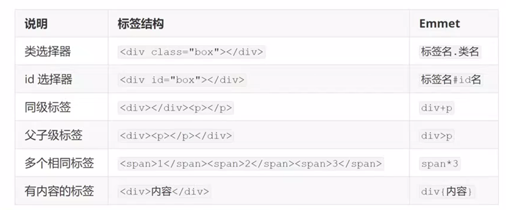
背景属性
网页背景一般需要“盒子”来装，也就需要使用 css 的width和height来限定这个盒子
描述——属性
背景色：background-color
可以和背景图同时存在，但会覆盖
背景图：background-image（bgi，emmet写法）
属性值：url(图片的url)
背景图的平铺方式：background-repeat（bgr）
如果背景图比背景小且没有放缩，就需要注意一下
属性值：
no-repeat：不平铺
repeat：平铺（默认）
repeat-x：水平方向平铺
repeat-y：垂直方向平铺
背景图位置：background-position（bgp）
属性：水平方向位置 垂直方向位置
关键字：left、right、center（居中）、top、bottom
坐标：数字+px，正负均可，0 0为左上角
关键字取值写法可以颠倒取值顺序，若只写一个关键字，则另一个默认居中
背景图缩放：background-size（bgs）
关键字：cover：等比缩放背景图以完全覆盖背景区
contain：等比缩放以完全装入背景区
百分比：根据盒子尺寸计算百分比，如100%
背景图固定：background-attachment（bga）
背景图不随元素的内容滚动
属性值：fixed
一般用于背景大图，直接给body加样式
在遇到背景图问题时使用该属性，可能有奇效
背景复合属性：background（bg）
可书写多个属性值，空格隔开，不区分先后顺序
背景色、背景图、平铺方式、位置、缩放、是否固定
显示模式
块级元素
独占一行，宽度默认是父级的100%，可添加宽高，但宽还得变成行内块元素才生效
典型的是div、p等
行内元素
一行可以共存多个，尺寸由内容撑开，添加宽高无效
典型的是span
行内块元素
一行可共存多个，默认尺寸由内容撑开，可添加宽高
典型的是图片img、视频video等
转换显示模式：
强制转换某个标签的显示模式
属性名：display
属性值：
block：块级
inline-block：行内块
inline：行内
字体图标
展示的是图标，但本质是字体
作用：在网页中添加有些简单的、颜色单一的小图标
光标类型
鼠标悬停在元素上时指针显示样式
属性名：cursor
属性值：
default，小箭头，默认效果
pointer，小手效果，提示用户可以点击
text，工字型，提示用户可以选择文字
move，十字光标，提示用户可以移动
透明度
设置整个元素的透明度（包含背景和内容）
如果只要背景半透明，用background-color的rgba即可
属性名：opacity
属性值：0-1（小数，值越高越不透明）
transition
可以为一个元素在不同状态之间的切换的时候添加过渡效果
transition：（复合属性）
属性值：过渡的属性 花费时间（s）
注意：
过渡的属性可以是具体的css属性，如宽或高
过渡属性也可以为all，即两个状态属性值不同的所有属性，都产生过渡效果
transition设置给元素本身
3. CSS 高级
一、盒子模型
定义
盒子模型（Box Model）是 CSS 中的一个核心概念，它定义了元素在网页上所占的空间。每个HTML元素可以看作是一个盒子，盒子是 CSS 布局的基础
可在浏览器的计算样式中查看盒子模型的详情
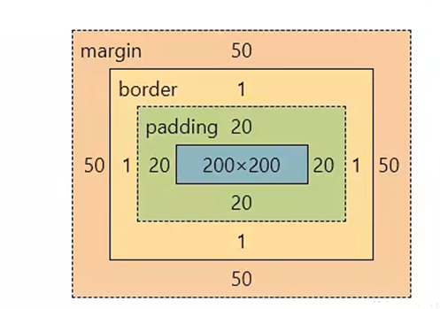
盒子的尺寸 = 内容尺寸+内边距尺寸+border尺寸，也就是给盒子加 border 会撑大盒子，如果要限制大小，必须牺牲内容区域的大小。也可以自动限制border的尺寸，加入下面的属性
box-sizing:border-box（内减模式）
（背景是整个盒子的大小，w 和 h 仅仅是内容的属性）
盒子的组成部分
内容区域：使用width&height规定内容范围
内边距：padding（出现在内容和盒子之间）
有多值写法，以设置不同边距
特定方向的内边距：padding-方位名词
top、bottom、left、right
边框线：border，复合属性（bd）
属性值：不区分顺序
边框线粗细：像素值
线条样式：solid（实线）、dashed（虚线）、dotted（点线）
颜色
特定方向边框线：border-方位名词（bd+方位名词首字母）
属性值和border属性一致，且不区分顺序
外边距：margin（出现在盒子外边）
用来拉开两个盒子之间的距离，使用auto为自动居中
注意：这个外边距根据其块级父级元素来确定
特定方向外边距：margin-方位名词
圆角效果：border-radius
属性值：百分比或数字+px
也是复合属性，记不住顺序可用border-top-left-radius等
长宽比不为1：1时使用百分比则圆角变椭圆角
可做成圆形头像、胶囊形等形状
阴影效果：box-shadow
属性值：x轴偏移 y轴偏移 模糊半径 扩散半径 颜色 内外阴影
默认是外阴影，改为内阴影则需要在最后加inset
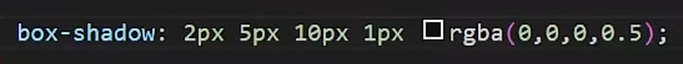
清除默认样式
清除边距：实际开发时一般都使用 *{}，通配符选中所有标签，然后将边距清零；当后期设计稿完成后再具体去设置
清除特定样式：例如 li 标签，在style里使用 list-style:'none'
元素溢出
控制溢出元素（超出父级范围时）的内容的显示方式
属性名：overflow
属性值：
hidden：溢出隐藏
scroll：溢出滚动（无论是否溢出都显示滚动条）
auto：溢出滚动（溢出才显示滚动条）
外边距合并现象
垂直排列的兄弟元素，上下margin会合并，将取较大值生效
外边距塌陷问题
父子级的标签，子级添加上外边距会产生塌陷问题，将导致父级一起向下移动
解决办法：父级设置padding而子级取消margin，或者父级设置border-top
行内元素内外边距模型
行内元素添加 margin 和 padding 无法改变元素垂直位置，只改变水平位置
解决办法：给行内元素添加 line-height 可改变垂直位置
二、浮动和 flex 布局
浮动
由前面的行内块等能达到同样的效果，但使用这种布局更加方便，它不仅能同行显示，还能在不同行时自动换行
浮动的元素不再占用标准流的位置，也就是“浮”在上面，其本质是实现图文混排的效果（左右结构布局）
属性名：float，属性值：left、right（左右浮动）
脱标：如果父级没有高度，子级无法撑开父级高度（因为浮动不占位置），这可能导致页面布局错乱
解决办法：清除浮动
flex 布局
flex布局也叫弹性布局，是浏览器提倡的布局模型，适合结构化布局，有着强大的空间分布和对齐能力
不会产生脱标效果，也就是子级元素能撑开父级
属性名和属性值：display:flex
设置了display:flex的标签，其元素就变成了一个弹性盒子，可以自动挤压或拉伸。主轴默认在水平方向
flex布局常见属性：
创建flex容器：display:flex
justify-content：主轴对齐方式
flex-start：默认值，从起点开始依次排列（没间距）
flex-end：终点开始依次排列
center：沿主轴居中排列（主轴默认水平轴）
space-between：沿主轴均匀排列，空白间距均分在盒子之间
space-around：沿主轴均匀排列，空白间距均分在盒子两侧
space-around：沿主轴均匀排列，弹性盒子与容器之间间距相等
align-items：控制所有弹性盒子的侧轴对齐方式（给容器加）
center
align-self：控制某个弹性盒子的侧轴对齐方式（给单个盒子加）
flex-direction：修改主轴方向
row：默认值，即水平方向
column（列）：垂直方向，从上到下
flex：弹性伸缩比，控制弹性盒子主轴方向的尺寸
属性值是整数数字
flex-wrap：弹性盒子换行
wrap：换行
nowrap：不换行（默认）
弹性盒子会自动挤压或拉伸，默认情况下所有弹性盒子都在一行显示
align-content：行对齐方式
和主轴对齐的属性值一致，且不更改主轴方向时和justify-content属性一致
三、定位
灵活改变盒子在网页中的位置，并且可以让两个标签堆叠在一起展示
定位模式
属性值：position
relative（相对定位，属性值）
参照自己原来的位置
不脱标，占位（还占着原来的位置）
标签显示模式特点不变（独占一行还是独占一行）
一般不会单独使用相对定位
absolute（绝对定位）
子级绝对定位，父级相对定位，则参照物是父级元素。若父级没有定位，则绝对定位参照整个页面
脱标，不占位，相当于“漂浮”起来了
标签的显示模特点改变，改成行内块模式
一般都是绝对和相对定位一起使用
fixed（固定定位）
脱标，不占位置，且参照物是浏览器窗口，和背景图固定类似
改变显示模式，是行内块模式
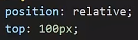
边偏移
设置盒子的位置，即left、top等
left、top这些是属性名，属性值是数字+px，或者百分比（各种对齐都能做到），如50%是自己的一半长度
堆叠层级
设置定位元素的层级顺序，改变定位元素的显示顺序
不加这个属性，则默认是按照标签的书写顺序，后来者居上
使用：z-index:数字，数字越大则显示顺序越靠上
四、网页元素变换与移动web
移动web指专门为移动设备而优化的网页
平面转换
改变盒子在平面内的形态（位移、旋转、缩放、倾斜等），又叫2D转换
过渡属性 transition 几乎是必加的，给元素本身；若不用transform则需要在伪类选择器中再弄一个新位置，而 transform 直接设定转换即可，更方便
transform 属性
是复合属性，其属性值：
translate(x轴移动距离,y轴移动距离)
取值是像素值、百分比（参照盒子本身），正负均可
rotate（旋转角度）
取值为正为顺时针旋转，负为逆时针，单位为deg
旋转会改变坐标轴向，坐标轴以第一种转换的坐标轴为基准，所以一般是先平移再旋转
想要多重转换，必须用复合属性写在一起，否则后面的transform会覆盖前面的
scale(缩放倍数)
一般是等比缩放，也可以写两个值，x和y轴分别缩放
skew(角度)
倾斜，角度单位为deg
注意倾斜和旋转的区别，长方形倾斜会变平行四边形
改变转换原点
默认情况下转换原点在盒子中心点
规范：transform-origin:水平原点位置 垂直原点位置
属性值：方位名词、像素值等
渐变
多个颜色逐渐变化的效果，一般用于设置盒子背景
线性渐变（从一个方向到另一个方向）
background-image:linear-gradient(渐变方向,颜色1 终点位置, 颜色2 终点位置…)渐变方向为可选，是to 方位名词或角度度数deg，默认向下
终点位置可选，为百分比值，是前一种颜色的占比，默认均分
径向渐变（中心点开始往外渐变）
可以给按钮添加高光等
background-image:radial-gradient(半径 at 圆心位置,颜色1 终点位置,颜色2 终点位置…)半径写两条时，变成椭圆
圆心位置取值：像素px、百分比、方位名词
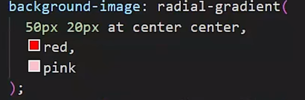
空间转换
在空间中转换元素形态，z轴正向指向用户，也就是屏幕外
属性名：仍然是 transform
属性值：
平移：translate3d(x,y,z)，三个值都必须写，可以是像素单位或百分比
要想z值有效果，必须为直接父级使用perspective属性
旋转：rotateZ(值)
z轴旋转和平面旋转效果一致，z可以替换成x和y
自定义旋转：rotate3d(x,y,z,deg)
自定义旋转轴的位置及旋转的角度，x、y、z取值为0-1之间的数值
缩放：scale3d(x,y,z)
同样有scalex，scaley，scalez三种属性分别设置
视角（视距）
属性名：perspective
指定了观察者和z=0平面的距离，为元素添加透视效果（近大远小、近实远虚）
添加给直接父级，属性值取值范围为800-1200px
空间变换一般都需要添加视角属性
立体呈现
设置元素的子级元素是位于3d空间中还是平面中
属性名：transform-style
属性值：preserve-3d（3d）、flat（默认，平面）
网页适配方案
宽度适配
宽度自适应（flex布局），一般是PC端的适配
等比适应
宽高等比例缩放，一般用于移动端
rem适配方案
rem是一个相对单位，也就是相对于HTML计算的结果，如1rem=1HTML字号大小
一般需要先给 HTML 加字号，也就是在style里，用 html 标签，使用font-size属性。如果屏幕不同，就必须设置不同的HTML字号
使用媒体查询：检测视口宽度，然后编写差异化CSS。media同样写在style里
31@media(媒体特性){2选择器{CSS属性}3}
媒体特性是一个条件，如果其满足，则执行后面的css
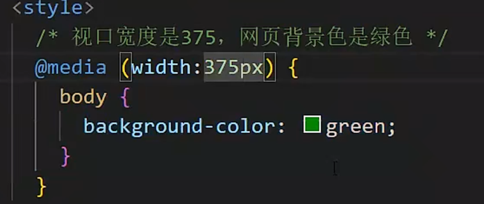
表示视口宽度小于等于375时，背景是绿色
vw适配方案
vw (viewport width) 也是一个相对单位，即相对视口的尺寸，参照视口的宽计算，1vw=0.01视口尺寸，如视口尺寸为1080，则1vw=10.8
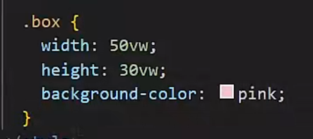
谷歌模拟器
chrome自带模拟移动端web，可以模拟网页在移动设备上的展现
使用：右键-检查-左上角（元素左边），即可打开移动模拟器
五、动画
动画和关键帧是一个思想，它实现多个状态之间的变化，动画过程可控（重复播放、最终画面、是否暂停）。与此对应，过渡只能实现两个状态之间的变化
定义动画
直接写在style里面
71@keyframes 动画名称{2 0%{当前状态对应的css}3 百分比1{}4 百分比2{}5 …6 100%{}7}若不使用百分比而是from和to，则只能实现两个状态之间的变化。百分比表示动画时长的百分比
使用动画
animation：动画名称 动画时长 速度曲线 延迟时间 重复次数 动画方向 执行完毕时状态
动画名称是之前定义在style里的动画的名称
动画时长（s）和名称必须写，属性取值不区分先后
速度曲线：linear（匀速）、steps(x)（表示分成x步动画，不平滑）
延迟时间（s）：页面展示之后，延迟多久才开始动画
重复次数：数字，infinite表示无限次
动画方向：alternate（带往返播放）
完毕状态：forwards（保留在结束状态）、backwards（开始状态，默认）
动画的每个属性值都可以拆分成单独的属性
动画的每个属性值都可以拆分成单独的属性来设置
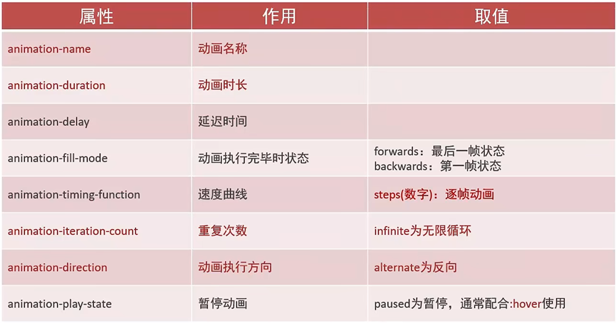
六、Bootstrap 框架
是一个响应式网页开发框架，提供了大量编写好的CSS样式，允许开发者结合一定的HTML结构及Js，快速编写功能完善的网页及常见的交互效果，其响应式的功能可以不用媒体查询也能快速开发自适应不同视口的网页
响应式网页不同于自适应网页，前者为一次设计处处通用，后者可能只是提供了多个网页，针对不同视口提供不同的网页
下载
http://www.bootcss.com，下载V5版本，选择下载生产文件，源码是看底层的
主要使用bootstrap.css和bootstrap.min.css
后者是一个压缩版本，而前者更符合人的代码书写习惯，两者作用是一样的
使用
和自己编写的CSS引入方法一致，使用 link
给标签添加类名
container：版心居中效果
栅格系统
栅格化是将整个网页的宽度分成12份，每个盒子占用对应的份数（12/盒子个数）
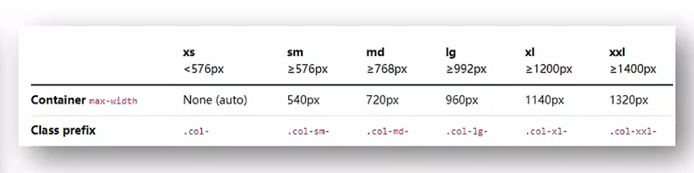
类名为大小对应的class prefix加上所占用的份数，例如
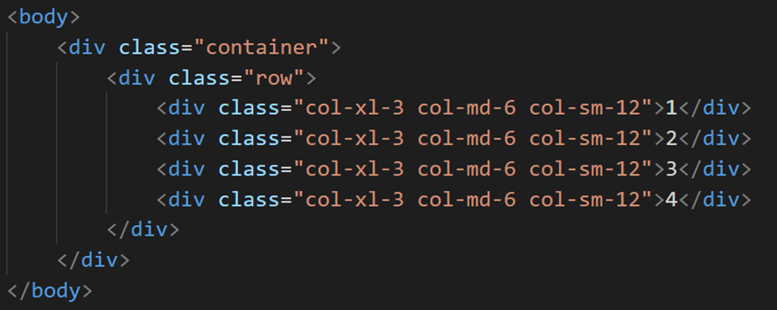
例如，中间4各div标签代表的含义就是：在xl时，该盒子占3个单位（也就是1行能排4个盒子），在md时占6个单位，也就是能排两个；在sm时只占一个单位。屏幕越大，盒子占的单位越少
注意：要将某些盒子动态排列，需要给父级添加方向类名，如row表示行；给爷标签添加container类，表示版心居中
全局样式
针对Button标签（按钮）
btn：清除默认样式
btn-success：成功
……具体如下，虽然有很多不同的含义，但实际上只是更改了按钮的颜色等属性

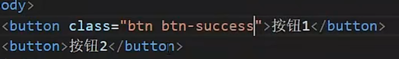
上图表示先清除默认样式，再添加一个success的样式
此外，调整按钮尺寸也是通过bgn前缀实现的，如bgn-sm表示小按钮，更多属性可见bootstrap官方文档
针对table标签
table：默认样式
table-striped：隔行变色
table-success：表格颜色（颜色和button系列一致）
组件
组件（Components）是一系列已经写好的功能样式，详情见bootstrap
使用组件分3步：
引入样式表（就是css文件）
引入js（如果没有动态功能）
引入js：在</body>标签的上一行，作为body的子级，使用script标签引入
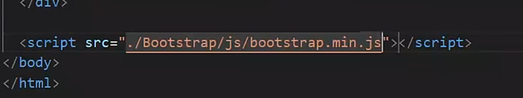
复制结构，修改内容
复制是复制官网的结构，直接把官网的结构拿来用就行，然后进行小修改
如果需要修改它本身的样式，需要把自己的css文件link或者style放在官方css下方，并找到对应元素的类名，使用类名选择器进行修改
如果想要修改，但不知道它的结构在哪，可以用网页打开，然后找规律，看看关键点出在哪
字体图标
进入bootstrap中文官网，在导航/extend：图标库-安装-下载安装包
使用：
复制fonts文件夹到项目目录
网页引入bootstrap-icons.css文件
调用css类名(图标对应的类名)
因为解压的文件夹里面会有 svg 的图标展示，名字就是其类名，所以比较方便
bootstrap所使用的全部组件
这些都是类名，想要用的时候直接给某个标签加上类名就行
Accordion：折叠面板，有一个小按钮可以折叠
Alerts：警告框
Badge：徽章，用于计数和打标签
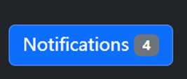
Breadcrumb：面包屑导航，用于只是当前页面在导航层级中的位
Buttons和Button group：按钮效果
Card：卡片效果
Carousel：本意是旋转木马和传送带，轮播图效果
Collapse：按下按钮后才展示隐藏信息的效果
Close button：关闭按钮
Dropdowns：下拉菜单效果
List group：列表效果，展示一些目录的信息
Modal：弹出提示框效果，比如确认信息，需要用户点击
Navbar：导航栏效果
Navs&tabs：导航和选项卡，一般用于单个页面的导航
offcanvas：侧边栏组件，用于侧边栏滑动导航
Pagination：分页效果，将在底部显示页面跳转的按钮
Placeholder：在网页未加载完成时，比如图片还没加载出来，使用占位可以保证页面布局不被打乱
Popover：弹出框，仅提示而没有交互
Progress：进度条效果
Scrollspy：滚动监听，比如顶部或者侧边有一个目录，用户在网页下滑时到了不同板块，目录也会变化
Spinners：旋转器，用于指示组件或页面的加载状态
Toasts：轻量级的弹出提示框，一般在边角位置
Tooltips：提示词，可附加在任何元素上，提供解释（比如鼠标放上去的时候）